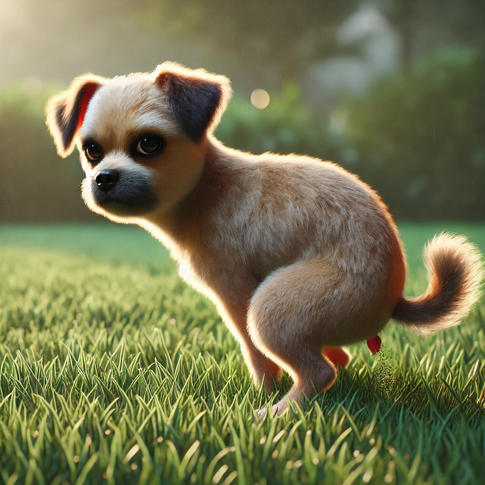

강아지똥
목차
작가
권정생
출판일
1997년
감상평에 대한 AI그림
책 강아지똥은 작은 존재의 가치와 희생, 생명의 아름다움을 그려낸 작품이다. 겉보기에는 하찮아 보이는 강아지똥이지만 결국 민들레를 꽃피우는 데 큰 역할을 한다는 점에서 우리 주변에 있는 작고 하찮아 보이는 것들도 누군가에게는 소중하고 중요한 가치를 지니게 된다는 생각을 하게 되었다

감상평에 대한 AI평가
이 감상평을 통해 "강아지똥"이라는 책이 작은 존재의 가치와 희생, 생명의 아름다움을 주제로 다루고 있음을 알 수 있습니다. 감상평 작성자는 겉보기에는 하찮아 보이는 강아지똥이 민들레를 꽃피우는 데 큰 역할을 한다는 점에서, 우리 주변의 작고 하찮아 보이는 것들도 누군가에게는 소중하고 중요한 가치를 지닐 수 있다는 점에 감명받은 것으로 보입니다.
이 감상평은 책의 주제를 잘 이해하고 있으며, 생명과 희생의 아름다움을 인식하고 있는 점에서 감동적인 평가라고 할 수 있습니다. 🥀